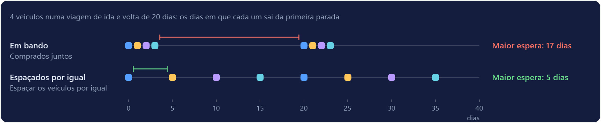

Linhas
Veículos que compartilham paradas, somam seus ganhos e mantêm a distância.
Uma linha é uma rota que seus veículos compartilham. As paradas são da linha: você as muda uma vez e todos os veículos dela acompanham.
Criar uma linha
- Abra um veículo e clique em Criar uma linha sob as ordens dele. Todos os veículos que fazem as mesmas paradas entram nela, onde quer que estejam no percurso.
- Coloque outro veículo nela com Entrar em uma linha na janela desse veículo. Ele assume as paradas da linha.
- Sair da linha tira um veículo de novo: ele mantém as paradas como suas.
- Clonar em um veículo de uma linha compra mais um para a mesma linha.
- Paradas mudadas na janela de qualquer veículo mudam a linha inteira, assim como marcar Carga completa ou Transferência.
A janela da linha
Clique no nome da linha na janela de um veículo, ou abra Linhas na barra superior (Ctrl+L). Dê à linha um nome e uma cor próprios: a rota dela é desenhada no mapa nessa cor.
| Botão | O que faz |
|---|---|
| Adicionar veículo | Compra mais um igual ao veículo mais novo da linha. |
| Parar todos | Segura todos os veículos na próxima estação; clique de novo para fazê-los partir. |
| Renovar antigos | Renova todos os veículos que passaram da vida útil. |
| Troca todos os veículos da linha por outro modelo. | |
| Clique duas vezes. Os veículos continuam fazendo as mesmas paradas, cada um por conta própria. |
A janela também soma o que a linha ganha: seus veículos, o lucro deste ano e do anterior, quão cheios saem e quanto custam para operar. Compare suas linhas para ver quais rotas dão lucro.
Espaçamento uniforme
Veículos comprados juntos, ou retidos por uma carga completa, tendem a andar em bando e chegar um atrás do outro. Marque Espaçar os veículos por igual na janela da linha:


- A linha cronometra uma viagem de ida e volta e depois a divide: com 4 veículos num percurso de 20 dias, sai um da primeira parada a cada 5 dias.
- Um veículo que chega cedo demais à primeira parada espera lá, e continua carregando enquanto espera.
- Nunca espera mais que um intervalo, então um veículo lento não segura os outros.